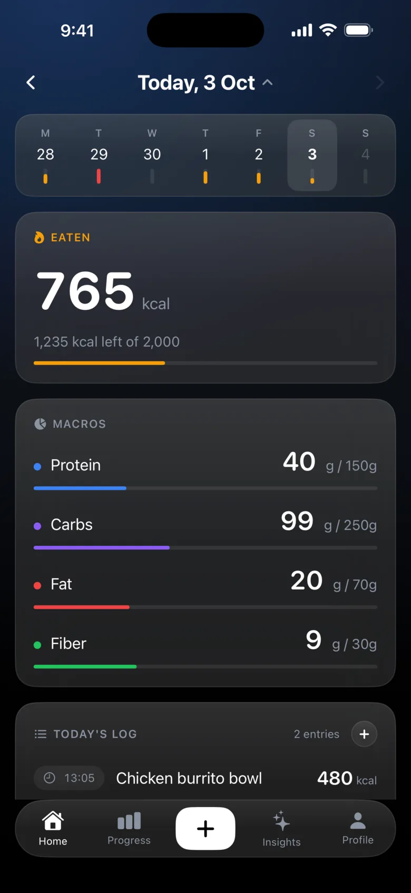
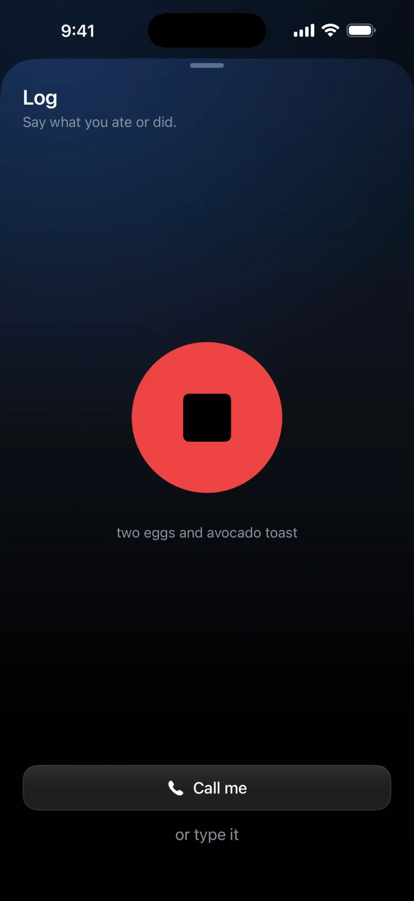
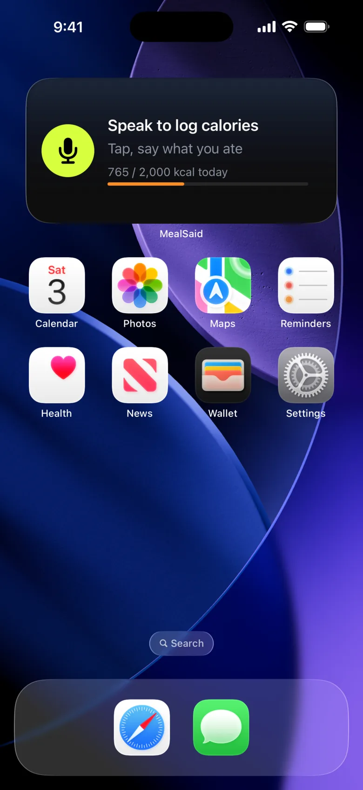
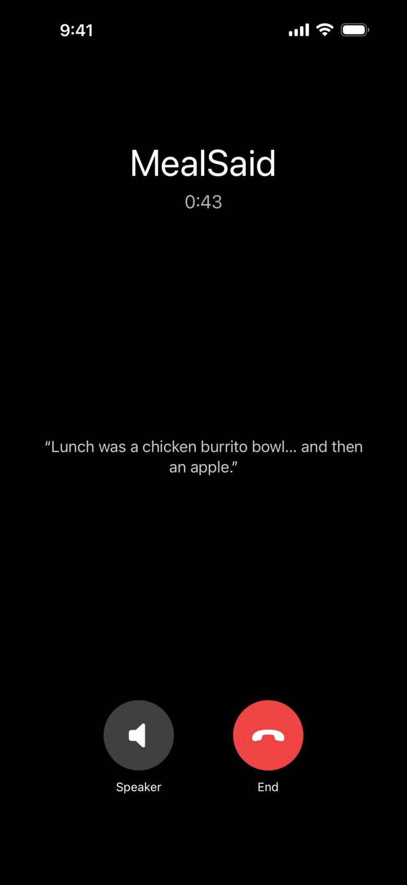
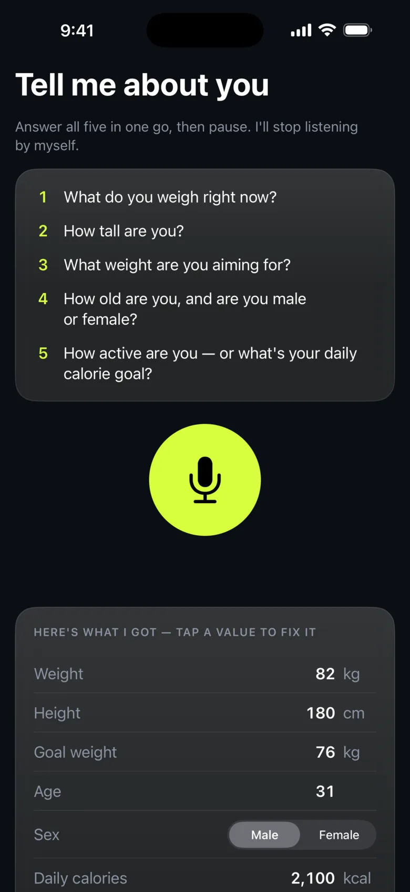
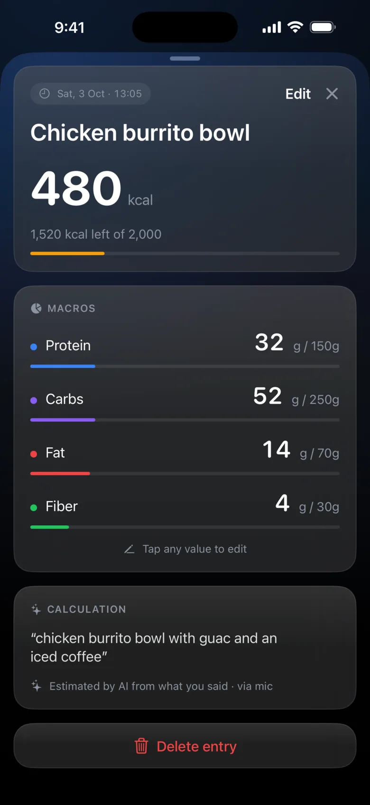
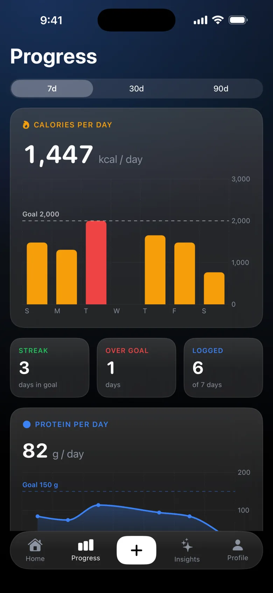

The simplest calorie tracker. Ever.
No typing. No searching. No ads.
You don't even have to open the app.
Free. iPhone, iOS 26. Everything lands in Apple Health.

01 Log
Just say what you ate.
Hold the mic. Say it. Let go.
Calories, protein, carbs, fat and fiber are estimated and saved in a second. No search box, no barcode, no portion sliders. Said when it happened? It's logged at that time.
two eggs and avocado toast

02 Anywhere
Log without opening the app.
Say it to Siri from whatever you're doing. Or one tap from your Lock Screen or Home Screen. It's already listening.
Hey Siri, log in MealSaid, two eggs and toast

03 Call
Forgot to log? It calls you.
It rings, asks, and waits for you to finish.
Pick the times you usually forget. MealSaid rings like a real call and asks what you ate today. It doesn't cut you off after three seconds. Pause, think, list everything from breakfast to the snack you're not proud of. Say "actually that was two slices" and it fixes the entry.

04 Setup
Set up in 10 seconds. By talking.
One conversation. Weight, height, goal, how you train.
It sets your daily calorie and macro targets from what you said. Change your mind later? Just say so.

05 Health
Straight into Apple Health.
Every meal, written as dietary energy, protein, carbs, fat and fiber.
Your other health apps and your Watch rings all see it. Tap any entry to read the exact words it came from and fix a number.

06 Progress
See your day at a glance.
Not a spreadsheet.
Today's calories and macros, a week strip you can scrub, and calorie bars per day for the last 7, 30 or 90 days.

On your phone. Not on ours.
Read the privacy policy- Stored on deviceYour log lives in a database on your iPhone and in Apple Health. Health data never leaves your phone.
- Voice is processed, not keptSpeech is transcribed and understood by our server, Deepgram and Anthropic, then discarded. Audio is not stored.
- No accountsNo sign-up, no email, no tracking. There is nothing to log in to.
- No adsFree, no in-app purchases in 1.0. We don't sell anything about you.
Questions
Is it free?
Yes. No in-app purchases in 1.0.
Where is my data?
On your iPhone and in Apple Health. Health data is never sent to our servers. Your voice is transcribed and interpreted transiently; audio isn't stored and nothing is tied to an account. Details in the privacy policy.
Does it work offline?
Viewing your log, totals and progress works offline. Logging by voice and the call need a connection.
Which iPhones?
Any iPhone running iOS 26. Apple Health is optional, but it's the point.
Android?
No. MealSaid is built around Apple Health and iPhone calls. There's no Android version planned.